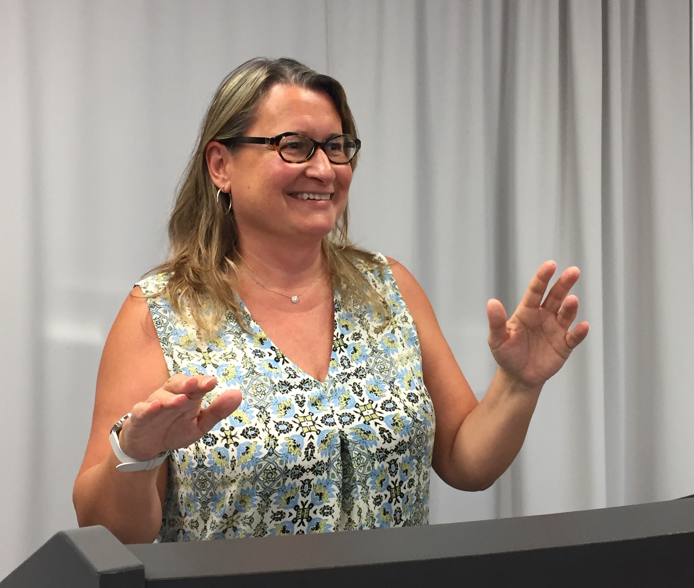

RECENT INVITED TALKS AND PRESENTATIONS
Chinese Congress on Artificial Intelligence (CCAI) 2020
Thoughtful Artificial Intelligence: Forging A New Partnership for Data Science and Scientific Discovery
ABSTRACT
Artificial intelligence will play an increasingly more prominent role in scientific research ecosystems, and will become indispensable as more interdisciplinary science questions are tackled. While in recent years computers have propelled science by crunching through data and leading to a data science revolution, qualitatively different scientific advances will result from advanced intelligent technologies for crunching through knowledge and ideas. In this talk, I will propose seven principles for developing “thoughtful artificial intelligence”, which will turn intelligent systems into partners for scientists. I will present a personal perspective on a research agenda for thoughtful artificial intelligence, and discuss its potential for data science and scientific discovery.
Knowledge Discovery and Data Mining (KDD) 2020
Generating Explanations that Matter through Meta-Provenance
ABSTRACT
Provenance standards have now been used for many years to generate useful explanations of the data analytic process used to generate a new finding. These explanations convey the details of analytic steps and the original data used in an analysis. In this talk, I will discuss the need for explanations that provide the context and rationale for how the data analysis process was designed. I will show how to capture meta-provenance that can be used to generate those explanations. I will present our work to date on capturing method abstractions and generalizations, templates that ensure that analyses follow proven approaches, questions that drive many analytic choices, and detailed metadata about models and their differences. I will illustrate with examples from several domains the kinds of explanations that can be generated from meta-provenance, and discuss important areas of future work.
NIST Ontology Summit 2020
Seven Ontologies for Publishing the Scientific Record on the Web
ABSTRACT
This talk will describe our work on seven ontologies that we have developed to describe complementary aspects of scientific work, and that interlinked together present a path towards publishing the scientific record on the Web. The Linked Earth Ontology extends existing standards, and was developed collaboratively and entirely online by scientists. The OntoSoft ontology describes scientific software artifacts with information relevant to scientists. The W3C PROV-O ontology represents provenance of scientific data, whether observable or derived through computation. The P-PLAN ontology extends PROV-O to describe high-level general plans, and the OPMW-PROV ontology extends both to describe abstract computational workflows linked to their executions. The DISK Hypothesis ontology describes hypothesis statements, their supporting evidence, and their revisions as new data is analyzed. The Software Description Ontology for Models characterizes the development of models so they can be understood and compared. These seven ontologies provide essential capabilities, but much work remains to be done to capture more comprehensively the scientific record. Are we far from a day when each scientific article will be properly linked to hypotheses, models, software, provenance, workflows, and other key scientific entities on the Web? Will AI research tools then be able to access this information to generate new results? Will AI systems ultimately be capable of autonomously writing scientific papers in the future?
Web Conference (WWW) 2020
Embedding the Scientific Record on the Web: Towards Automating Scientific Discoveries
ABSTRACT
I envision a future where AI systems will be key contributors to science, but this is unlikely to happen unless we reinvent our current publications and embed our scientific records in the Web as structured Web objects. This implies that our scientific papers of the future will be complemented with explicit, structured descriptions of the experiments, software, data, and workflows used to reach new findings. These scientific papers of the future will not only culminate the promise of open science and reproducible research, but also enable the creation of AI systems that can ingest and organize scientific methods and processes, re-run experiments and re-analyze results, and explore their own hypothesis in systematic and unbiased ways. In this talk, I will describe guidelines for writing scientific papers of the future that embed the scientific record on the Web, and our progress on AI systems capable of using them to systematically explore experiments. I will also outline a research agenda with seven key characteristics for creating AI scientists that will exploit the Web to independently make new discoveries.
AAAI 2020
Will AI Write the Scientific Papers of the Future?
ABSTRACT
In this address to the community as AAAI President, I take stock of major watershed moments in AI over the last thirty years and reflect on the breadth and significance of these advances for our field. Taking science as one of the important areas that AI is transforming, I discuss some recent work in AI for science that offers systematic, correct, and unbiased approaches to pursue hypothesis-driven discovery, integrated modeling of complex systems, and task-driven collaboration. I will put forward some of the advances in AI that I envision in the next few decades.
OGC Location Conference 2019
Invited talk at the Open Geospatial Consortium (OGC) Location Powers, November 2019
Conference Website
Knowledge-Powered Data Science for Integrated Modeling in Geosciences
ABSTRACT
Major geoscience challenges are presented by complex phenomena with uncertain, intermittent, sparse, multi-resolution, and multi-scale data. New approaches are needed that leverage the advances in data-driven research with methods that exploit the domain knowledge and scientific principles that govern the phenomena under study. These geoscience-aware systems will need to incorporate extensive knowledge about phenomena that combine physical, geological, chemical, biological, ecological, and anthropomorphic factors. In this talk, I will discuss a research agenda for significantly more powerful data science approaches to sensing and data collection, data integration, modeling, and decision making. I will present our ongoing work on interdisciplinary model integration spanning climate, hydrology, agriculture, and socioeconomic modeling, where we use extensive knowledge about data and models to significantly reduce the time needed to develop new integrated models that currently require months of effort.
Midwest Big Data Hub AHM 2019
Invited talk, Annual Meeting of the Midwest Big Data Hub, October 2019
Meeting Website
Artificial Intelligence for Integrated Modeling
ABSTRACT
Artificial Intelligence (AI) has enormous potential to provide fundamental new capabilities for geosciences and for environmental research in particular. Since its early days, AI has made strong contributions to diverse areas in science through search and planning, machine learning, robotics, and knowledge representation. Major geoscience challenges are presented by complex phenomena with uncertain, intermittent, sparse, multi-resolution, and multi-scale data that require new AI approaches. In this talk, I will discuss a research agenda for significantly more powerful approaches to sensing and data collection, data integration, modeling, and decision making that require a new generation of AI systems with substantial scientific knowledge and user context. I will give examples from our ongoing work in new AI capabilities for interdisciplinary model integration spanning climate, hydrology, agriculture, and socioeconomic modeling. It typically takes many months and even years to create valid end-to-end simulations, as the different models need to be configured in consistent ways and generate data that is usable by other models. We are developing a range of AI techniques in order to automate significant aspects of data ingestion from a variety of sources (particularly remote sensing data), data preparation, and model set up.
CEDAR 2017
The Geoscience Paper of the Future: Practical Guidelines for Adopting Digital Scholarship, Reproducible Research, and Open Science
ABSTRACT
This presentation covers best practices in reproducible research, open science, and digital scholarship that help researchers increase citations for their papers, get credit for all their research products, augment their vitae with data and software that they have written, write compelling data management plans for funding proposals, comply with new funder and journal requirements, and practice open and reproducible science. We begin with a motivation for authors through an overview of why scientists, publishers, funders, and the public care about science practices. Next, we describe how to make research data accessible through publication in a public repository, including metadata, a license for reuse, and citable using a unique and persistent identifier. We then show how to make software accessible by making it available in a public repository, with a license, and a unique and citable persistent identifier. We also cover how to document in a software registry key information that helps others reuse research software. We then discuss how to document provenance and methods by explicitly describing related computations and outcomes in a workflow sketch, a formal workflow, or a provenance record, possibly with a persistent identifier. Finally, we provide a summary checklist for authors, and show how to manage their scholarly identity, reputation, and impact throughout their careers.
UT Jackson School

Distinguished Lecture, DeFord Lecture Series, University of Texas Austin, Jackson School of Geosciences, February 2016
Intelligent Systems for Geosciences
ABSTRACT
Artificial Intelligence has had great impact in recent years in the commercial sector, through speech-based personal assistants, product recommender systems, self-driving cars, and knowledge-driven search. There are many unexplored opportunities for artificial intelligence to develop knowledge-driven infrastructure for science that can make scientific processes more efficient and can break new barriers in the complexity of the problems that can be tackled. In this talk, I will describe our current research on intelligent workflow systems that capture scientific knowledge about data and analytic processes to help scientists create new workflows correctly and efficiently. We are also developing a collaborative data analysis framework called “organic data science” that captures collaborative workflows and their associated requirements, data, models, skills, and findings. I will also describe a new research project on automating machine learning through semantic representations, so we can develop intelligent systems capable of hypothesis-driven discovery. The development of intelligent frameworks for scientific data analysis will enable scientists to use more cost-effective approaches and tackle increasingly more challenging integrative problems.
CMU CSD50
Invited Alumni Talk at the 50th Anniversary of Carnegie Mellon University's Department of Computer Science, October 2015 (starts in minute 13)
Meeting Website
Intelligent Systems for Scientific Discovery
ABSTRACT
Herb Simon’s pioneering AI work on scientific discovery focused primarily on automatically deriving laws from data. As the complexity of the phenomena under study increases, learning from data alone has limited possibilities. Our work has focused on capturing scientific knowledge about data and analytic processes to develop intelligent systems capable of hypothesis-driven discovery. New research in intelligent systems will advance scientific research, by making data collection more effective, data integration faster, and data analysis more scalable. A crucial requirement for these intelligent systems, which sets them apart from other AI applications, is the need to capture all forms of scientific knowledge for reasoning and placing new discoveries in the context of what is known.
K-CAP 2015
Keynote talk at the Eighth International Conference on Knowledge Capture (K-CAP), October 2015
Conference Website
Linked Open Knowledge
ABSTRACT
Scientific data repositories are increasingly publishing their content as linked open data to foster data sharing and interoperability. I this talk, I will describe a complementary vision for linked open knowledge and the pressing need for it in science domains. This vision is motivated by our own work, where we publish the provenance of scientific analyses as linked open data but want to publish more. While provenance captures the execution traces of analysis workflow, we also publish the general method that was used as a reusable workflow. Moreover, we describe the models and data transformations that are used in the method as well as the constraints that validate the analysis that was done. This requires the publication of scientific knowledge, which is linked and open on the Web, and complements the linked open data that we already have. I will also discuss a research agenda for linked open knowledge and its benefits to science domains.
DARPA Wait What? 2015
AI Ascendant: Designing AIs to do the right thing
DESCRIPTION
PANEL MODERATOR: Steve Lohr of the New York Times.
PANELISTS: Trevor Darell from the University of California at Berkeley, Tom Dietterich from Oregon State University, Yolanda Gil of the University of Southern California, and Hadas Kress-Gazit from Cornell University.
PANEL DESCRIPTION: Computer scientist John McCarthy summarized the central conjecture of artificial intelligence (AI) in a proposal for a two-month conference held at Dartmouth College in 1956: "[E]very aspect of learning or any other feature of intelligence can in principle be so precisely described that a machine can be made to simulate it." Sixty years of research has produced remarkable progress in every aspect of artificial intelligence: speech understanding, language translation, computer vision, machine learning, robotics, text mining, neuromorphic systems and much more. AI technologies pervade web search engines, advertising, recommendation services, social media, fraud detection and drug discovery. AI programs beat the world champions of chess and "Jeopardy!," but more importantly, AI technology is starting to be integrated into our critical infrastructure, our economy and our defense. This panel will explore the issues that these changes raise: What new AI capabilities will be required? What safety and cybersecurity challenges must be addressed? What are the potential economic and strategic impacts?
CI 2015
Keynote talk at the Fifth International Workshop on Climate Informatics (CI), September 2015
Conference Website
Intelligent Systems for Climate Research: When Will Deep Learners Meet Deep Knowledge?
ABSTRACT
Machine learning has set up a beachhead for AI in climate research. Although learning algorithms are making new discoveries, using sophisticated techniques to exploit the data that is available, the phenomena under study are so complex that learning from data alone has limited possibilities. We need to supplement data with knowledge about geoscience processes that can improve learning outcomes. In this talk, I will describe how research in intelligent systems can advance geosciences research, not only by improving machine learning performance but also by making data collection more effective, data processing less time consuming, and data understanding more accessible. I will also describe a new research project on automating machine learning through semantic representations.
ACS 2015

Keynote talk at the Third Conference on Advances in Cognitive Systems (ACS), May 2015
Conference WebsiteThe Human Bottleneck in Data Analytics: Opportunities for Cognitive Systems in Automating Scientific Discovery
ABSTRACT
While orders of magnitude improvements in computing, network bandwidth, and distributed sensing are pushing the envelope in the scale of the scientific phenomena that can be studied, the human component of data analytics has been largely unaddressed and is increasingly becoming a bottleneck to progress. This has created great opportunities for artificial intelligence to capture human expertise and develop knowledge-driven infrastructure that can make data analysis processes more efficient and can break new barriers in the complexity of the problems that can be tackled. In this talk, I will describe our current research on intelligent workflow systems that provide assistance and automation for complex data analysis processes. Workflows capture useful combinations of analytic tools and their dataflow as reusable multi-step methods. We have extended workflow representations with semantic constraints that express characteristics of data and analytic models. We have developed algorithms that use those constraints to automatically explore the space of possible analyses given high-level user guidance. Our WINGS workflow system implements these algorithms on top of semantic web standards and reasoners. Data analysis experts can use semantic workflow representations in WINGS to define constraints about the use of analytic tools and their data requirements. End users can get intelligent assistance from WINGS to validate and easily run workflows with their own datasets. In more recent work, we are addressing the challenge of collaborative creation of workflows in a framework that we call "organic data science", where the expertise of diverse scientists is brought in as the need for specific data, models, skills, or knowledge is uncovered as the collaboration progresses. The development of intelligent frameworks for scientific data analysis will enable scientists to tackle increasingly more challenging integrative problems in a more cost-effective and therefore more ubiquitous manner.
ISWC 2014
Semantic Challenges in Getting Work Done
ABSTRACT
In the new millennium, work involves an increasing amount of tasks that are knowledge-rich and collaborative. We are investigating how semantics can help on both fronts. Our focus is scientific work, in particular data analysis, where tremendous potential resides in combining the knowledge and resources of a highly fragmented science community. We capture task knowledge in semantic workflows, and use skeletal plan refinement algorithms to assist users when they specify high-level tasks. But the formulation of workflows is in itself a collaborative activity, a kind of meta-workflow composed of tasks such as finding the data needed or designing a new algorithm to handle the data available. We are investigating "organic data science", a new approach to collaboration that allows scientists to formulate and resolve scientific tasks through an open framework that facilitates ad-hoc participation. With a design based on social computing principles, our approach makes scientific processes transparent and incorporates semantic representations of tasks and their properties. The semantic challenges involved in this work are numerous and have great potential to transform the Web to help us do work in more productive and unanticipated ways.
Special Seminar 2014
Report on the EarthCube Field Trip for Earth-Centered Communication for Cyberinfrastructure, Information Sciences Institute, University of Southern California, August 2014
What Do Geologists Want? A Computer Scientist's Report on a Field Trip to Yosemite and Owens Valley
ABSTRACT
What do thirteen geologists, twelve computer scientists, eleven compasses, ten bottles of hydrochloric acid, nine clean-up crews, eight ruggedized laptops, seven tablets, six-course dinners, five go-pro cameras, four vans, three high-school students, two linguists, and a psychologist have in common? A field trip organized by the NSF EarthCube EC3 project (Earth-Centered Communication for Cyberinfrastructure). The goal of the EC3 project is to understand the challenges of geologists to collect, manage, and integrate data collected in the field. By bringing computer scientists to see what geologists do in field trips, the project aims to uncover the cyberinfrastructure needs for field science. This talk will report on what I learned from the first field trip of the EC3 project, which took us to Yosemite National Park and Owens Valley on August 4-8, 2014. I will convey through pictures what we learned, and the opportunities for cyberinfrastructure in field science. I found that there are many opportunities for AI research, including speech recognition, sketching, data modeling and integration, geospatial reasoning and visualization, image processing, and robotics.
ESIP 2014
Invited talk at the 2014 Summer Meeting of the Federation for Earth Science Information Partners (ESIP), June 2014
Conference Website
Shedding Light on the 'Dark Software' of Science
ABSTRACT
Although it is not uncommon to see scientific software published for others to use, this tends to happen with software that has significant investment associated with it. In geosciences, for example, modeling software is often published in shared repositories or in open source hosting services. However, there is a significant amount of software developed by scientists that is never published, and as a result this software cannot be reused by others and is eventually lost. This includes software for data transformations, quality control, and other data preparation software. We refer to this as "dark software", by analogy with Heidorn’s "dark data". This talk will argue that this software represents vary valuable scientific products, and will describe our work on the EarthCube GeoSoft project to lower the barriers for sharing all forms of software developed by scientists.
iEMSs 2014

Keynote talk at the Seventh International Congress on Environmental Modelling and Software (iEMSs), June 2014
Conference Website
Knowledge-Driven Infrastructure: Towards Intelligent Science Assistants
ABSTRACT
Advances in computing have enabled a data-centered revolution in science that has been significant, and yet I believe it will be dwarfed by what is ahead. We have seen high-end computing and distributed computing push the envelope in the scale of the phenomena that can be studied, leading to many many success stories of this kind of data-intensive computing in many areas of science. In this talk, I will argue that we are beginning to see a second revolution enabled by knowledge-driven infrastructure that brings knowledge to the forefront. In scientific practice, data is augmented by knowledge that is scattered in papers, lab notebooks, emails, presentations, etc. Scientists are beginning to see beyond these informal textual forms and creating more declarative knowledge representations that enable more efficient communication among researchers and improve reproducibility. This includes semantic characterizations of data and software, process representations as workflows, and ontologies and metadata standards. This trend towards knowledge-driven infrastructure is transforming the way science is done. But there is a more profound innovation in this knowledge-driven infrastructure. By making scientific knowledge explicit, it becomes machine readable. Knowledge-driven infrastructure enables the development of Intelligent Science Assistants that partake in scientific processes, relieving scientists from tasks that are routine and facilitating tracking of experimental explorations and model revisions. I will present our work to date on knowledge-driven infrastructure, including intelligent workflow systems, constraint-based software characterization, and social knowledge collection. I will also introduce the nascent discipline of Discovery Informatics that is catalyzing relevant research in artificial intelligence, visualization, data analytics, and social computing with the goal of improving and innovating science processes to accelerate discoveries.
AI Seminar 2013
Presentation at the Artificial Intelligence Seminar Series, Information Sciences Institute, University of Southern California, December 2013
Discovery Informatics: Intelligent Systems for Science Innovation
ABSTRACT
Although recent advances in computing have resulted in a data-centered revolution in science practice, I believe it will be dwarfed by what is ahead. While orders of magnitude improvements in network bandwidth, computing, and distributed sensing are pushing the envelope in the scale of the scientific phenomena that can be studied, the human component of science has been largely unaddressed and is increasingly becoming a bottleneck to progress. Scientists still largely drive scientific processes but it is increasingly challenging to manage the scale and complexity of modern discovery processes. This has created great opportunities for artificial intelligence to make scientific processes more efficient and to break new barriers in the complexity of the problems that can be tackled. In this talk, I will describe our current research on intelligent workflow systems that provide assistance and automation for complex data analysis processes. I will illustrate new capabilities that are enabled by coupling semantic representations of processes and data. I will describe our work on semantic workflow systems to assist scientists to create valid workflows, and to automate workflow generation given high-level user guidance. Semantic workflows are an example of provenance-aware infrastructure for science, where metadata is used and generated as the data is being processed. I will discuss our new work on organic data science, where communities of scientists can describe data analysis processes explicitly as a platform for collaboration. I will also introduce the nascent discipline of Discovery Informatics that is catalyzing relevant research in artificial intelligence, visualization, data analytics, and social computing with the goal of improving and innovating science processes to accelerate discoveries.
AGU 2013
Invited Talk at the American Geophysical Union (AGU) Conference, December 2013
Conference Website
Semantic Workflows and Provenance-Aware Software
ABSTRACT
Workflows are increasingly used in science to manage complex computations and data processing at large scale. Intelligent workflow systems provide assistance in setting up parameters and data, validating workflows created by users, and automating the generation of workflows from high-level user guidance. These systems use semantic workflows that extend workflow representations with semantic constraints that express characteristics of the data and analytic models. Reasoning algorithms propagate these semantic constraints throughout the workflow structure, select executable components for underspecified steps, and suggest parameter values. Semantic workflows also enhance provenance records with abstract steps that reflect the overall data analysis method rather than just execution traces. Intelligent workflow systems are provenance-aware, since they both use and generate provenance and metadata as the data is being processed. Provenance-aware software enhances scientific analysis by propagating upstream metadata and provenance to new data products. Through the use of provenance standards, such as the recent W3C PROV recommendation for provenance on the Web, provenance-aware software can significantly enhance scientific data analysis, publication, and reuse. New capabilities are enabled when provenance is brought to the forefront in the design of software systems for science.
UNED 2013
Invited Presentation at the Sesion Inaugural del Programa de Doctorado en Sistemas Inteligentes, Universidad Nacional de Educacion a Distancia, Octubre 2013.
Conference Website (Spanish)
Research Themes in Discovery Informatics: Intelligent Systems to Accelerate Data Analysis in Science and Beyond
ABSTRACT
Although recent advances in computing have resulted in a data-centered revolution in science practice, I believe it will be dwarfed by what is ahead. While orders of magnitude improvements in network bandwidth, computing, and distributed sensing are pushing the envelope in the scale of the scientific phenomena that can be studied, the human component of science has been largely unaddressed and is increasingly becoming a bottleneck to progress. Scientists still largely drive scientific processes but it is increasingly challenging to manage the scale and complexity of modern discovery processes. This has created great opportunities for artificial intelligence to make scientific processes more efficient and to break new barriers in the complexity of the problems that can be tackled.
In the first part of the presentation, I will introduce the nascent discipline of Discovery Informatics that is catalyzing relevant research in artificial intelligence, visualization, data analytics, and social computing with the goal of improving and innovating science processes to accelerate discoveries. I will describe our ongoing research in three major areas of discovery informatics. First, I will introduce intelligent workflow systems that provide assistance and automation for complex data analysis processes. I will illustrate new capabilities that are enabled by coupling semantic representations of processes and data, for example to assist scientists to create valid workflows, and to automate workflow generation given high-level user guidance. Second, I will describe our work on provenance-aware infrastructure for science, where metadata is used and generated as the data is being processed. This provenance is crucial for experimental reproducibility and data sharing. Finally, I will discuss our new work on organic data science, where communities of scientists can describe data analysis processes explicitly as a platform for collaboration.
The second part of the presentation will be highly interactive and designed for students. I will propose three possible thesis topics as areas of research in Discovery Informatics. Through these examples, we will have an interactive discussion about the importance of problem selection, problem formulation, and evaluation in formulating a successful dissertation. I will also cover some practical advice on starting up a research career and on being a productive researcher.
SMWCon 2013
Organic Data Science: Opening Scientific Data Curation
ABSTRACT
Although scientists in many disciplines share data through community repositories so that others can harvest those data for analysis and publications (e.g., in astronomy, physics, etc), this paradigm has failed in other scientific disciplines. In some cases, scientists prefer to define themselves the metadata that they want to specify, rather than being required to provide what is pre-defined as required by the repository. In other cases, the data collectors have no incentives to invest the effort required to formally and fully describe their datasets. At the heart of this problem is the traditional treatment of data sharing as a separate function in science, where data repositories are not integrated with the practices of science. We are investigating the use of semantic wikis as a platform for scientific communities to create and converge organically on metadata properties that suit their needs. We are also investigating "organic data science" as a paradigm to support data sharing as a collective activity that is integrated with other activities in scientific research, such as the joint formulation of shared science questions and their pursuit through shared workflows for data analysis. This approach is consistent with recent trends to make scientific software and data more open and broadly accessible across disciplines, as well as open to volunteer contributors and to citizen scientists. A key aspect of this work is the credit to contributors through provenance and the development of proactive mechanisms to encourage structure and convergence. Our organic data science approach can benefit other Semantic MediaWiki projects for social knowledge collection, particularly those focusing on big data integration and analysis. This talk describes joint work with Paul Hanson from the Center for Limnology at the University of Wisconsin Madison and Chris Duffy from the Department of Civil Engineering at Pennsylvania State University.
MUCMD 2013
Invited Presentation at the Third Symposium on Meaningful Use of Clinical Data (MUCMD 2013)
Conference Website
Workflows and Social Computing
ABSTRACT
This talk will describe recent work on collaborative creation of workflows to address complex big data analytic problems. The breadth and scope of big data, such as clinical data and other scientific data, makes the data analysis so complex that it requires combining expertise from multiple disciplines, including domain, data systems, machine learning, and visualization expertise. This talk will describe how workflows support this kind of collaborative data analytics. The talk will also describe recent work on organic data science to support collaboration not only for workflow creation but also for data sharing, metadata capture, and all aspects of problem formulation.
CTS 2013
Invited talk at the 2013 International Conference on Collaboration Technologies and Systems (CTS), May 2013
Conference WebsiteSocial Knowledge Collection
ABSTRACT
Social content collection sites on the Web allow communities of interest to create and share information at unprecedented scale. As a point of reference, MediaWiki (the wiki that powers Wikipedia) has millions of installations that allow non-programmers to contribute content. However, because the content in these sites has very little structure the information cannot be easily aggregated to answer simple questions. In recent years several approaches have emerged for social knowledge collection, allowing a community of contributors to structure content so that information can be aggregated to answer reasonably interesting albeit simple factual queries. This talk gives an overview of existing social knowledge collection research, ranging from intelligent interfaces for collection of semi-structured repositories of common knowledge, semantic wikis for organizing and structuring information, and collaborative ontology editors to create consensus taxonomies with classes and properties. The talk will end with a reflection on open research problems in this area.
NYU 2012
Invited Seminar Presentation at the Center for Health Informatics and Bioinformatics, New York University Langone Medical Center, October 2012
Towards Knowledge-Driven Science Infrastructure
ABSTRACT
Recent advances in computing have resulted in a data-centered revolution in science practice, and yet I believe it will be dwarfed by what is ahead. While orders of magnitude improvements in network bandwidth, computing, and distributed sensing are pushing the envelope in the scale of the scientific phenomena that can be studied, the human component of science has been largely unaddressed and is increasingly becoming a bottleneck to progress. Scientists still largely drive scientific processes but it is increasingly challenging to manage the scale and complexity of modern discovery processes. This has created great opportunities for artificial intelligence to make scientific processes more efficient and to break new barriers in the complexity of the problems that can be tackled. In this talk, I will describe our current research on intelligent workflow systems that provide assistance and automation for complex data analysis processes. We have extended workflow representations with semantic constraints that express characteristics of data and analytic models. We have developed algorithms to propagate those constraints throughout the workflow structure, select executable components for underspecified steps, and automatically explore the space of possible analyses given high-level user guidance. We are investigating new approaches to publish workflows and their results as web objects that can be readily shared and reused in open science collaborations. I will also introduce the nascent discipline of Discovery Informatics that is catalyzing relevant research in artificial intelligence, visualization, data analytics, and social computing with the goal of improving and innovating science processes to accelerate discoveries.
OGC 2013
Invited Talk at the Eightyfirst Open Geospatial Consortium Technical and Planning Committee Meeting, January 2013
Conference Website
Reproducibility, Workflows, and the W3C Provenance standard
ABSTRACT
Tracking the provenance of geospatial information is important in order to understand how to trust and use the information based on what sources generated it and the processes used to integrate it. This talk will describe the importance of capturing the provenance of geospatial information integration processes, and how this can be done through intelligent workflow systems. The talk will also give an overview of the recent W3C PROV standard and will discuss its relevance in the context of geospatial information. The talk will also discuss challenges of provenance technologies including scalability, granularity, and presentation of provenance.
AGU Dec 2012
Designing a Roadmap for Workflow Cyberinfrastructure in the Geosciences: From Big Data to the Long Tail
ABSTRACT
Scientific activities can be seen as collections of interdependent steps represented as workflows. Gathering and analyzing data, coordinating computational experiments, and publishing results and data products are organized activities traditionally captured in research notebooks. Today we have the ability to digitally codify much of these activities, particularly for computational experiments, using workflow technologies. Workflows may be used to execute enormous computations, to combine distributed data and computing resources in novel ways, and to guide scientists through complex processes. When combined with metadata and provenance-capturing capabilities, workflows allow reproducibility of results, increased efficiency, and enhanced publications. The challenge before us is to make these tools ubiquitously available, enhanced, and adopted for the geosciences.
The EarthCube Workflows Community Group was created as part of the NSF EarthCube initiative. Its goal is to constitute a broad community within the geosciences that will identify both short-term problems and long-term challenges for scientific workflows. Aspects of this goal include better education and outreach, better understanding of the different types of workflows, better collaboration between workflow software developers and geoscientists, the identification of gaps, and a vision for geoscience grand challenges that no workflow technology can currently address.
The EarthCube Workflows Community Group has established an open process of collecting community input to create a roadmap for workflows in geosciences. The group seeks contributions and feedback on the current draft roadmap from scientists and end users, particularly those that have had minimal exposure to cyberinfrastructure capabilities. The roadmap is accessible in the Workflows are a of the EarthCube site (http://earthcube.ning.com/group/workflow). This roadmap is considered a living document that will be extended based on community feedback and updated as future needs and understanding of the problems evolve.
ICCBR 2012
Keynote Talk at the Twentieth International Conference on Case-Based Reasoning (ICCBR 2012), September 2012
Conference Website
Reproducibility and Efficiency of Scientific Data Analysis: Scientific Workflows and Case-Based Reasoning
ABSTRACT
Scientists carry out complex scientific data analyses by managing and executing many related computational steps. Typically, scientists find a type of analysis relevant to their data, implement it step by step to try it out, and run many variants as they explore different datasets or method configurations. These processes are often done manually and are prone to error, slowing the pace of discoveries. Scientific workflows have emerged as a formalism to represent how the individual steps work and how they relate to the overall process. Workflows can be published, discovered, and reused to make data analysis processes more efficient through automation and assistance. In this talk, I will argue that integrating case-based reasoning techniques with workflows research would result in improved approaches to workflow sharing, retrieval, and adaptation. I will describe our initial work on semantic workflow matching using labeled graphs and knowledge intensive similarity measures. Furthermore, I will argue that if scientists followed a case-based approach more closely, scientific results would be more easily inspectable and reproducible. Through scientific workflows and case-based reasoning, scientific data analysis could be made more efficient and more rigorous.
CMU 2012
Presentation at the Seminar Series of the School of Computer Science, Carnegie Mellon University, September 2012
Towards Knowledge-Driven Science Infrastructure
ABSTRACT
Recent advances in computing have resulted in a data-centered revolution in science practice, and yet I believe it will be dwarfed by what is ahead. Orders of magnitude improvements in network bandwidth, high end computing, and distributed sensing are pushing the envelope in the scale of the scientific phenomena that can be studied. Unfortunately, the human component of science has been largely unaddressed and is increasingly becoming a bottleneck to progress. Scientists still largely drive scientific processes but it is increasingly challenging to manage the scale and complexity of modern discovery processes. This has created great opportunities for artificial intelligence to make scientific processes more efficient and to break new barriers in the complexity of the problems that can be tackled. I will describe our current research on intelligent workflow systems that provide assistance and automation for complex data analysis processes. We have extended workflow representations with semantic constraints that express characteristics of data and analytic models. We have developed algorithms inspired in planning techniques to propagate the semantic constraints throughout the workflow structure, select executable components for underspecified steps, and automatically explore the space of possible analyses given high-level user guidance. We are investigating new approaches to publish workflows and their associated constraints and results as web objects that can be readily shared and reused in open science collaborations. I will also introduce the nascent discipline of Discovery Informatics that is catalyzing relevant research in artificial intelligence, visualization, data analytics, and social computing with the goal of improving and innovating science processes to accelerate discoveries.
MUCMD 2012
Invited Presentation at the Second Symposium on Meaningful Use of Clinical Data (MUCMD 2012), August 2012
Conference Website
The Importance of Workflows in Big Data Research
ABSTRACT
Big data goes beyond large volume, and encompasses data that is diverse along a vast number of dimensions. A recent editorial in Science reported that the majority of research labs already lack the expertise required to analyze their data. Researchers often resort to forming teams of collaborators that have complementary expertise. This approach to big data analytics is rapidly becoming extremely time consuming and in most cases impractical, and will not scale as the complexity and variety of the data continues to increase. These big data challenges have created great opportunities for artificial intelligence to make data analytic processes easier to share and more efficient to execute, lowering the barriers of the complexity of the problems that can be tackled. I will describe our ongoing research on intelligent workflow systems that assist users with complex data analysis problems.
NSF 2012
Invited Presentation at the National Science Foundation, June 2012.
Discovery Informatics: Science Challenges for Intelligent Systems
ABSTRACT
This talk will report on the 2012 NSF Workshop on Discovery Informatics, convened to articulate the research challenges concerned with the management of knowledge and of the complex processes involved in scientific discovery. Discovery Informatics focuses on computing advances aimed at identifying scientific discovery processes that require knowledge assimilation and reasoning, and applying principles of intelligent computing and information systems in order to understand, automate, improve, and innovate any aspects of those processes. Workshop participants identified an expansive range of fundamental research challenges for information and intelligent systems brought into focus around three themes: 1) New computational approaches needed to manage the complexity of discovery processes that surpass human cognitive abilities; 2) New computational approaches needed to increase the connections between knowledge and data and exploit them to facilitate scientists' understanding of complex phenomena; and 3) New computational approaches are needed to flexibly combine diverse human abilities to tackle science problems that may not be otherwise considered possible. Existing relevant research efforts are scattered across disciplines and lack the critical mass needed to make a significant impact on these challenging aspects of science. A new initiative in Discovery Informatics would enable and catalyze the transformational innovations needed to have a broad impact on the improvement and innovation of scientific discovery processes.
NCBO June 2012
Invited Presentation at the National Center for Biomedical Ontologies (NCBO) Webinar Series, June 2012
Webinar Site
Semantic Workflows and Provenance-Aware Software
ABSTRACT
I will describe our current research on intelligent workflow systems that provide assistance and automation for complex data analysis processes. Semantic workflows extended workflow representations with semantic constraints that express characteristics of data and analytic models. We have developed algorithms to propagate these semantic constraints throughout the workflow structure, select executable components for underspecified steps, and suggest parameter values. These algorithms allow us to assist users to create valid workflows, and to automate workflow generation given high-level user guidance. Semantic workflows enable us to publish more than provenance, by sharing workflows with abstract steps that reflect the overall data analysis method rather than just publishing execution traces.
I will also talk about the importance of provenance-aware software that both uses and generates metadata as the data is being processed. I will illustrate our work on combining a workflow system and a data integration system when they both are provenance-aware, and how new capabilities are enabled when provenance is brought to the forefront in the design of software systems for science.
Beyond The PDF, 2011
Shared Provenance Representations for Scientific Reproducibility through Semantic Workflows
ABSTRACT
This talk will describe our research on semantic workflows, which are descriptions of workflows at a higher abstraction level that capture what workflow steps do rather than how they are implemented or executed. We have developed semantic workflow representations that support automatic constraint propagation and reasoning algorithms to manage constraints among the individual workflow steps. In recent work, we reproduced results published in the literature by reusing workflows from a library that captured a wide range of methods that are common in population genomics. The talk will discuss the lessons learned and the benefits that semantic workflows offer to enable reproducible research. A workflow can be seen as a "digital instrument" that enables scientists to analyze data through the lens of the method that the workflow represents. Shared workflow repositories would give scientists access to such digital instruments at very low cost. Semantic workflow representations can capture semantic constraints that must be respected in order to use the suite of digital instruments properly. Semantic workflow representations can also be used to establish mappings across different experiments, facilitating the organization of valuable provenance knowledge about scientific results.
CSHALS 2011
Keynote Talk at the Fourth ISCB Conference on Semantics in Healthcare and Life Sciences (CSHALS), January 2011
Conference Website
Semantics for Computational Workflows: A Top Ten List
ABSTRACT
In the coming decades, computational experimentation will push the boundaries of current science infrastructure in terms of inter-disciplinary scope and integrative models of the phenomena under study. A key emerging concept is computational workflows, which provide a declarative representation of complex scientific applications in terms of the interrelated data retrieval and processing tasks and their mapping to the underlying computational environment. In this talk, I will give an overview of the benefits of using workflows for scientific data analysis, including the management of distributed computations, provenance recording, and reproducibility. I will introduce semantic workflows, which exploit a variety of metadata about data characteristics and data processing algorithms to assist users with significantly more complex analytical tasks. Semantic workflows enable new capabilities for automated workflow generation, reuse, validation, and experiment design that have the potential to increase scientific productivity by orders of magnitude. I will conclude with an overview of the research challenges that lie ahead and the broader benefits of having semantic workflows more widely adopted.